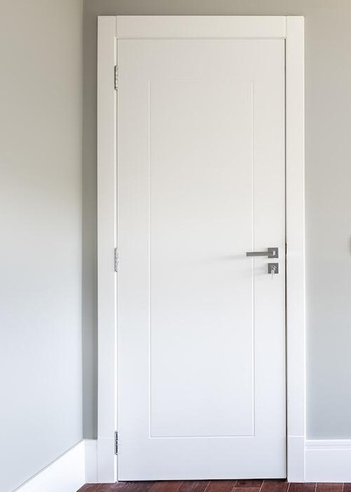

Porque comprar uma porta embutida?
Daqui a alguns anos, as portas embutidas estarão presentes em todas as novas construções, pois oferecem maior durabilidade e praticidade tornando o ambiente mais aconchegante.
Essencial para apartamentos e escritórios pequenos, as portas de embutir proporcionam total otimização de espaço, além de não atrapalharem a estética do ambiente.
De acordo com pesquisas realizadas em vários países, 66% das residências já possuem porta embutida em algum ambiente. Porém, este número é menor no Brasil por se tratar de um produto novo no mercado brasileiro, mas todos que a conhecem ou são apresentados ao produto destacam seus eventuais benefícios como qualidade e praticidade.

Funcional para Drywall e Alvenaria
A porta de embutir da Wood Portas é funcional para Drywall e alvenaria. Tem espessura de 10 cm e se encaixa perfeitamente em um montante de 70 cm para Drywall. Sua vedação pode ser utilizada em quaisquer soluções de placa do segmento Drywall, como placas de gesso, placa verde para ambientes úmidos e até placas antichamas e cimentícias, para ambientes externos.
Atualmente, o sistema Drywall apresenta solução completa para qualquer obra, principalmente pelo custo baixo, pela limpeza e rapidez na instalação. É muito mais eficaz, comparada às soluções de reboco e cimento molhado atuais, que utilizamos na maioria das construções no Brasil.
(IMAGEM Funcional)
Os modelos de placa podem ser utilizados sem contra indicações e substituem totalmente as paredes convencionais de bloco, com acústica muito parecida e suportam qualquer tipo de revestimento de azulejo, papel de parede entre outros. Porém, como muitos ainda não conhecem ou necessitam por questões técnicas, foi criada uma placa de metal que é utilizada na vedação da porta, na qual é possível aplicar o cimento molhado, nivelando-o com a parede já existente.